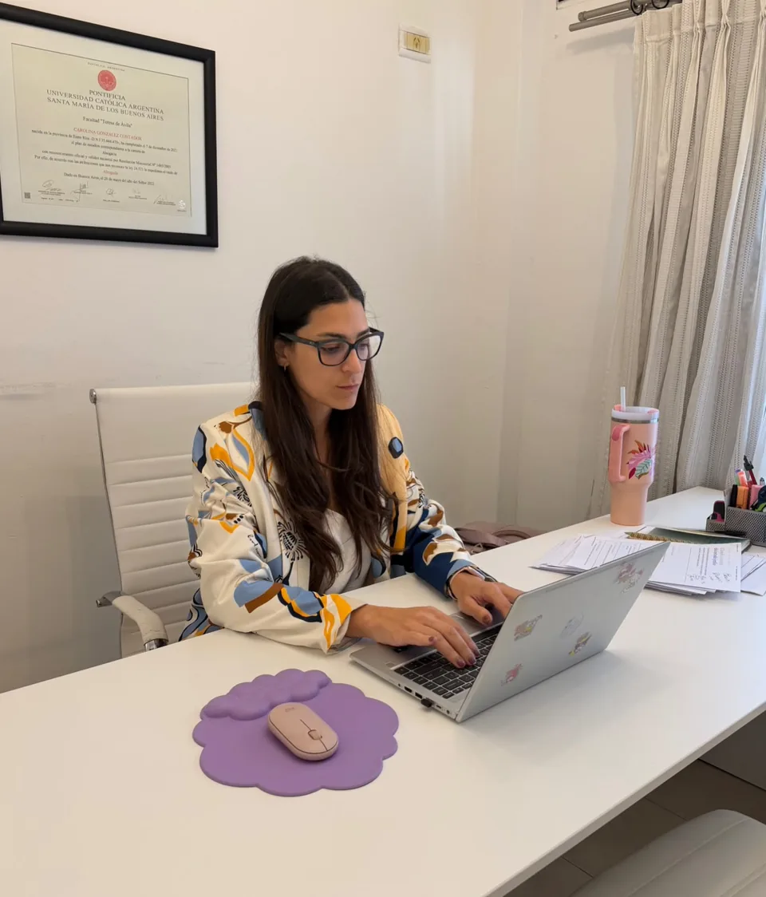

Amparos de salud · Entre Ríos
¿Tu Obra Social o Prepaga te negó una cobertura? Tiene que cumplir.
Presento amparos con pedido de medida cautelar urgente para que recibas el medicamento, la cirugía o el tratamiento que la ley te garantiza.
- Matrícula provincial y federal
- Toda la provincia
- Atención los 7 días
Defensa del derecho a la salud
Pedido de medida cautelar en casos urgentes
Actuación ante la justicia provincial y federal
Seguimiento personal de cada expediente
Nuestra convicción
El derecho a la salud no admite demoras.
Un medicamento que no llega, una cirugía postergada, un tratamiento interrumpido. Muchas Obras Sociales y Prepagas rechazan o dilatan pedidos que están obligadas a cubrir. La acción de amparo es la herramienta judicial diseñada para estas situaciones: rápida, directa y eficaz.
Áreas de práctica
Intervengo cuando la cobertura
se niega, se limita o se demora.
- Medicamentos esenciales
- Medicamentos de alto costo
- Cirugías y procedimientos
- Estudios y diagnósticos urgentes
- Discapacidad y prestaciones de apoyo
- Acompañamiento terapéutico
- Prótesis y ortesis
- Tratamientos crónicos
- Fertilidad asistida
- Internación domiciliaria
- Continuidad de cobertura
- Tratamientos innovadores

El estudio
Dra. Carolina
González Contador
Abogada · Derecho a la Salud
Mi práctica está dedicada a la defensa del derecho a la salud. Acompaño a personas y familias que enfrentan negativas, demoras o incumplimientos de su Obra Social o Prepaga, y llevo cada caso ante la justicia con rigor técnico y la urgencia que la situación médica requiere.
Cada expediente recibe atención personal: escucho, analizo la documentación, defino la estrategia y sigo el caso de principio a fin, con comunicación clara en cada etapa.
- Matrícula provincial
- CAER · T. I F. 290 · N.º 10693
- Matrícula federal
- T. 140 F. 655
- Ámbito
- Toda la provincia de Entre Ríos
Proceso
Cómo avanzamos con tu caso
-
I
Análisis
Reviso la indicación médica y las respuestas de la Obra Social para identificar el incumplimiento.
-
II
Estrategia
Defino la vía más eficaz: intimación previa o acción de amparo directa.
-
III
Presentación
Presento el amparo y, cuando la urgencia lo exige, solicito una medida cautelar.
-
IV
Seguimiento
Te informo cada avance y sigo el caso hasta que la cobertura se cumpla.
Preguntas frecuentes
Lo que necesitás saber antes de empezar
Si tu duda no está acá, escribime y te respondo personalmente.
Hacer una consulta¿Qué es un amparo de salud?
Es una acción judicial rápida para proteger el derecho a la salud cuando una Obra Social o Prepaga niega, demora o limita una prestación. Suele acompañarse de una medida cautelar para obtener la cobertura de forma urgente.
¿Cuánto tiempo tarda?
Depende de cada caso, pero el amparo es una vía pensada para situaciones urgentes. Cuando se solicita una medida cautelar, la respuesta puede llegar en pocos días.
¿Qué documentación necesito?
En general: DNI, credencial de la Obra Social o Prepaga, la orden o prescripción médica, historia clínica o informe del médico, y cualquier respuesta (o falta de respuesta) de la Obra Social. En la primera consulta te indico exactamente qué hace falta.
¿Atendés en toda la provincia?
Sí, atiendo consultas de todo Entre Ríos. Gran parte del trabajo puede hacerse a distancia, sin que tengas que trasladarte.
¿Trabajás con Obras Sociales provinciales y nacionales?
Sí. Intervengo frente a Obras Sociales provinciales, nacionales, PAMI y empresas de medicina prepaga, ante la justicia provincial y federal.
Contacto
Hablemos de tu caso.
Escribime directamente por WhatsApp y contame qué está pasando con tu cobertura.
Escribir por WhatsAppTambién podés completar el formulario para preparar tu consulta.
- WhatsApp(0343) 15 503-0827
- Emailestudiojuavy@gmail.com
- OficinaColón 344, 3.º C, Paraná, Entre Ríos
- HorarioLunes a domingo, 9 a 18 h